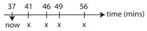

Binary Search Tree
Contents
1.2. Binary Search Tree#
1.2.1. 引子：Runway Reservation System#
Airpot with a single runway
Reserve req specify “requested landing time” t
Add t to the set if no other landings are scheduled within k minutes.
Remove t from set R after it lands
Example#

Request for time: 44 not allowed (46 ∈ R); 53 OK; 20 not allowed (already past)
1.2.2. Can we do better compared with previous#
Sorted array: a k minute check can be done in O(1) but insertion(shifting) takes O(n).
Min heap: insert in O(lgn) time but k minute check takes O(n) time
Sorted linked list: cant do the binary search.
1.2.3. BST#

Property#
Let x be a node in a binary search tree:
If y is a node in the left subtree of x, then \(y.key <= x.key\).
If y is a node in the right subtree of x, then \(y.key >= x.key\).
Inorder tree walk#
The binary-search-tree property allows us to print out all the keys in sorted order.
preorder tree walk prints the root before the values in either subtree as shown Fig. 1.1
a postorder tree walk prints the root after the values in its subtrees.)
{kind=link}
Fig. 1.1 Pseudocode inorder tree walk#
find(k), find min(), insert(x), next_larger(x)(successor) and delete().
find(k): Follow left and right pointers(binary search) until you find it or hit NIL.
find min( ): keep going left until hit NIL
insert(x): two pointers - prev and current, follow left and right until current hit NIL
next_larger(x): find_min() if node x has a right subtree, or traverse up-left until reach a node y that is a left child, return y’s parent.
deletion(x): tricky!
Case 1: x has no children. Just delete it (i.e. change its parent node so that it doesn’t point to x).
Case 2: x has one child. Splice out x by linking x’s parent to x’s child.
Case 3: x has two children. Swap x with x’s successor and splice out x by linking x’s parent to x’s child. Case 1 and Case 2 can be combined.
Special case: Delete the root node
create a sentinel node
link the sentinel node with root
delete self.root
reassign sentinel.left to self.root
unlink the sentinel node
#!/usr/bin/env python
from pickle import NONE
from tkinter import Y
from turtle import right
from unittest.mock import sentinel
class BSTNode(object):
"""A node in the vanilla BST tree."""
def __init__(self, parent, k):
"""Creates a node.
Args:
parent: The node's parent.
k: key of the node.
"""
self.key = k
self.parent = parent
self.left = None
self.right = None
def _str(self):
"""Internal method for ASCII art."""
label = str(self.key)
if self.left is None:
left_lines, left_pos, left_width = [], 0, 0
else:
left_lines, left_pos, left_width = self.left._str()
if self.right is None:
right_lines, right_pos, right_width = [], 0, 0
else:
right_lines, right_pos, right_width = self.right._str()
middle = max(right_pos + left_width - left_pos + 1, len(label), 2)
pos = left_pos + middle // 2
width = left_pos + middle + right_width - right_pos
while len(left_lines) < len(right_lines):
left_lines.append(' ' * left_width)
while len(right_lines) < len(left_lines):
right_lines.append(' ' * right_width)
if (middle - len(label)) % 2 == 1 and self.parent is not None and \
self is self.parent.left and len(label) < middle:
label += '.'
label = label.center(middle, '.')
if label[0] == '.': label = ' ' + label[1:]
if label[-1] == '.': label = label[:-1] + ' '
lines = [' ' * left_pos + label + ' ' * (right_width - right_pos),
' ' * left_pos + '/' + ' ' * (middle-2) +
'\\' + ' ' * (right_width - right_pos)] + \
[left_line + ' ' * (width - left_width - right_width) + right_line
for left_line, right_line in zip(left_lines, right_lines)]
return lines, pos, width
def __str__(self):
return '\n'.join(self._str()[0])
def inorder_tree_walk(self, x):
"""Prints the key of the root of a subtree between the values of its left and right subtrees
"""
current = x
if current is not None:
self.inorder_tree_walk(current.left)
print(current.key)
self.inorder_tree_walk(current.right)
def find(self, k):
"""Finds and returns the node with key k from the subtree rooted at this
node in an iterative approach
Args:
k: The key of the node we want to find.
Returns:
The node with key k.
"""
current = self
while current is not None and k != current.key:
if k < current.key:
current = current.left
else:
current = current.right
return current
def find_min(self):
"""Finds the node with the minimum key in the subtree rooted at this
node.
Returns:
The node with the minimum key.
"""
current = self
while current.left is not None:
current = current.left
return current
def next_larger(self):
"""Returns the node with the next larger key (the successor) in the BST.
"""
if self.right is not None:
return self.right.find_min()
current = self
prev = current.parent
while prev is not None and current == prev.right:
current = prev
prev = current.parent
return prev
def insert(self, node):
"""Inserts a node into the subtree rooted at this node.
Args:
node: The node to be inserted.
"""
if node is None:
return
prev = None
current = self
while current is not None:
prev = current
if node.key < current.key:
current = current.left
else:
current = current.right
node.parent = prev
if node.key < prev.key:
prev.left = node
else:
prev.right = node
def delete(self):
"""Deletes and returns this node from the BST."""
# Case 1 & 2 (Opposite to Case 3)
if self.left is None or self.right is None:
if self.parent.left == self:
self.parent.left = self.left or self.right
# Check if self has a child
if self.parent.left is not None:
self.parent.left.parent = self.parent
else:
self.parent.right = self.left or self.right
# Check if self has a child
if self.parent.right is not None:
self.parent.right.parent = self.parent
return self
# Case 3: node has two children
# Find the next larger(dont have the left child - proof by contradiction)
next_larger = self.next_larger()
next_larger.key, self.key = self.key, next_larger.key
return next_larger.delete()
def check_ri(self):
"""Checks the BST representation invariant around this node.
Raises an exception if the RI is violated.
"""
if self.left is not None:
if self.left.key > self.key:
raise RuntimeError("BST RI violated by a left node key")
if self.left.parent is not self:
raise RuntimeError("BST RI violated by a left node parent "
"pointer")
self.left.check_ri()
if self.right is not None:
if self.right.key < self.key:
raise RuntimeError("BST RI violated by a right node key")
if self.right.parent is not self:
raise RuntimeError("BST RI violated by a right node parent "
"pointer")
self.right.check_ri()
class BST(object):
"""A binary search tree."""
def __init__(self, klass = BSTNode):
"""Creates an empty BST.
Args:
klass (optional): The class of the node in the BST. Default to
BSTNode.
"""
self.root = None
self.klass = klass
def __str__(self):
if self.root is None: return '<empty tree>'
return str(self.root)
def find(self, k):
"""Finds and returns the node with key k from the subtree rooted at this
node.
Args:
k: The key of the node we want to find.
Returns:
The node with key k or None if the tree is empty.
"""
return self.root and self.root.find(k)
def find_min(self):
"""Returns the minimum node of this BST."""
return self.root and self.root.find_min()
def insert(self, k):
"""Inserts a node with key k into the subtree rooted at this node.
Args:
k: The key of the node to be inserted.
Returns:
The node inserted.
"""
node = self.klass(None, k)
if self.root is None:
# The root's parent is None.
self.root = node
else:
self.root.insert(node)
return node
def delete(self, k):
"""Deletes and returns a node with key k if it exists from the BST.
Args:
k: The key of the node that we want to delete.
Returns:
The deleted node with key k.
"""
node = self.find(k)
if node is None:
return None
# Special case: root node has no parent
# which may cause None violation in Case 1 or 2
if node is self.root:
# create a sentinel node and link with the root
sentinel = self.klass(None, 0)
sentinel.left = self.root
self.root.parent = sentinel
deleted = self.root.delete()
self.root = sentinel.left
# unlink the sentinel node
if self.root is not None:
self.root.parent = None
sentinel.left = None
return deleted
else:
return node.delete()
def next_larger(self, k):
"""Returns the node that contains the next larger (the successor) key in
the BST in relation to the node with key k.
Args:
k: The key of the node of which the successor is to be found.
Returns:
The successor node.
"""
node = self.find(k)
return node and node.next_larger()
def check_ri(self):
"""Checks the BST representation invariant.
Raises:
An exception if the RI is violated.
"""
if self.root is not None:
if self.root.parent is not None:
raise RuntimeError("BST RI violated by the root node's parent "
"pointer.")
self.root.check_ri()
def test(args=[10], BSTtype=BST):
import random, sys
if not args:
args = sys.argv[1:]
if not args:
print ('usage: %s <number-of-random-items | item item item ...>' % \
sys.argv[0])
sys.exit()
elif len(args) == 1:
items = (random.randrange(100) for i in range(int(args[0])))
else:
items = [int(i) for i in args]
tree = BSTtype()
for item in items:
tree.insert(item)
print(tree)
tree_root = tree.root
tree_root.inorder_tree_walk(tree_root)
if __name__ == '__main__':
test()
1.2.4. Unit_test#
The query operations offered by the data structure are guaranteed to produce the correct result, as long as the representation invariant holds (is true).
Update operations are guaranteed to preserve the representation invariant (if the RI holds before the update, it will also hold after the update).